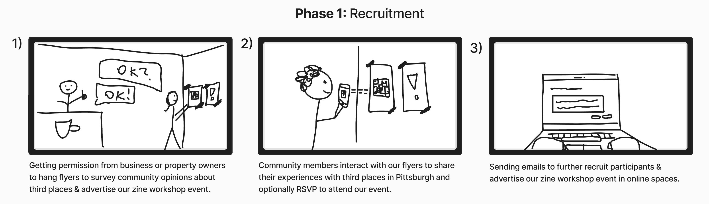
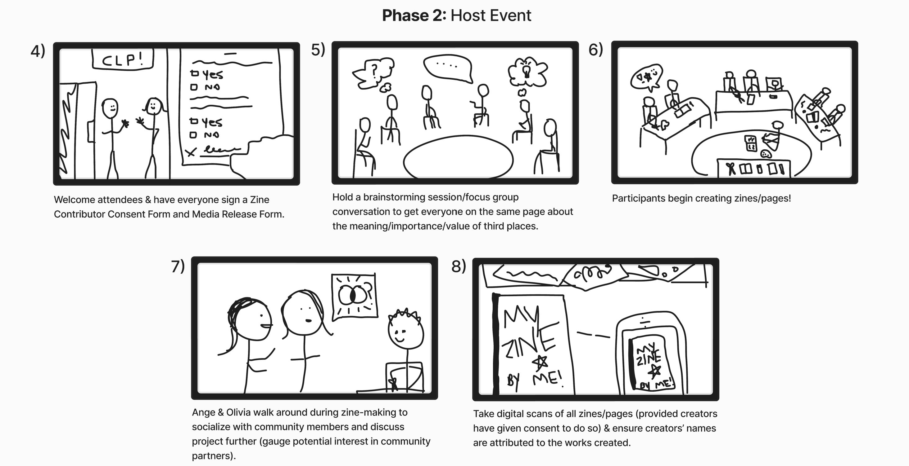
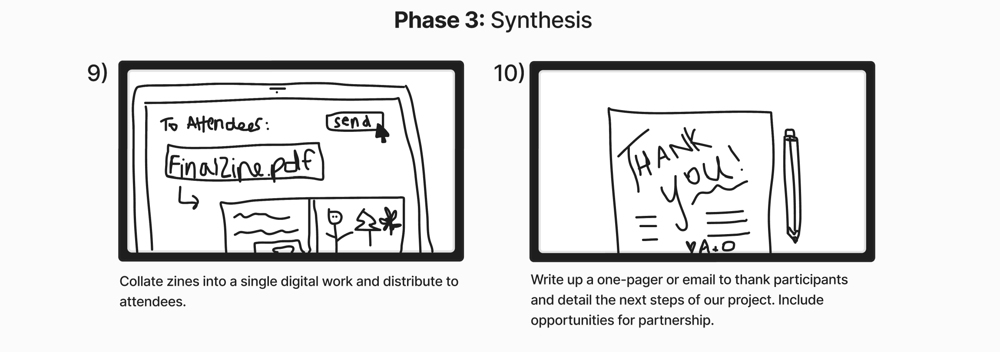
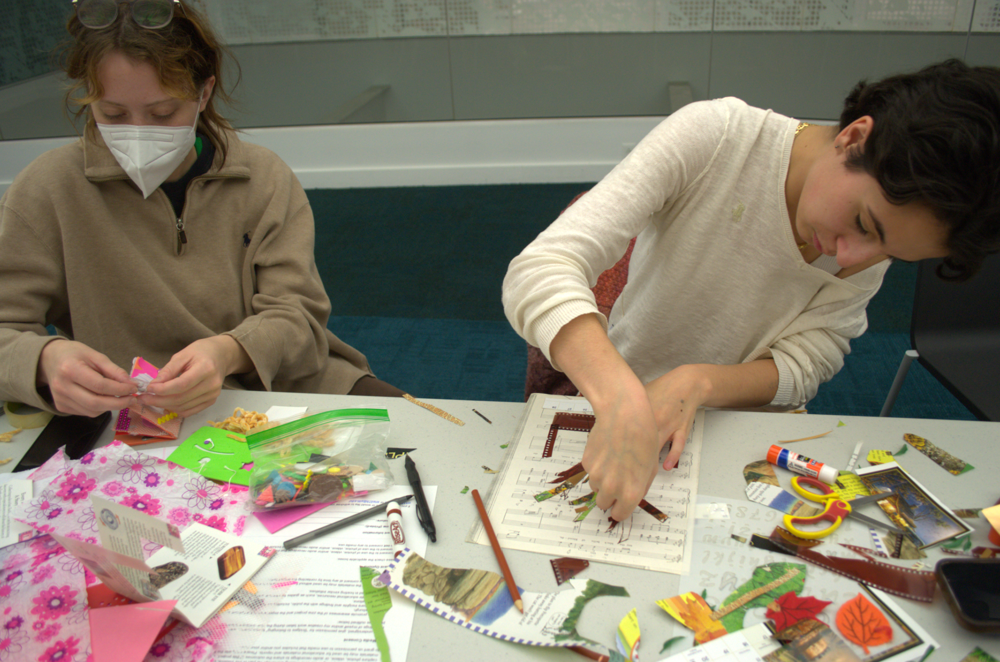
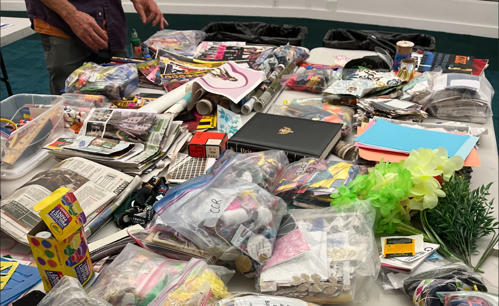
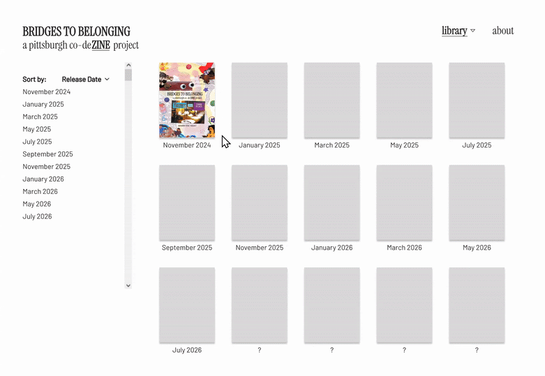
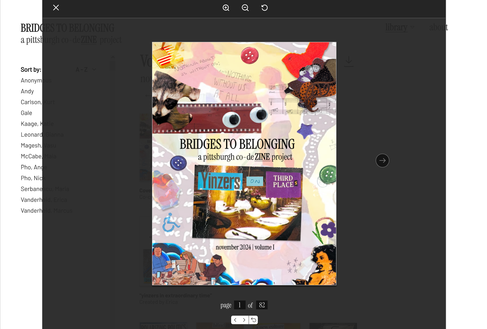
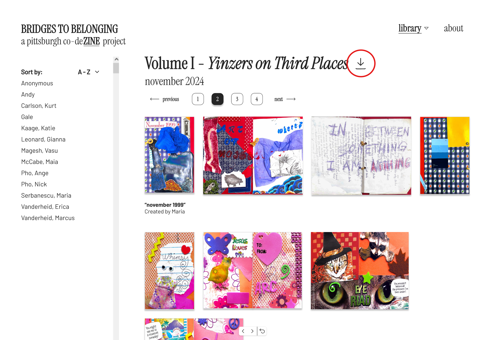

olivia terry
olivia terryBridges to Belonging: A Pittsburgh Co-DeZINE Project
This project was the culmination of my Interactive Design senior capstone. Collaborating with my partner, Ange Pho, we set out to explore community-driven design methods, united by a shared passion for fostering connections through creative processes. The project began with a community zine-making workshop focused on addressing the loneliness epidemic and the decline of third places in Pittsburgh. Zines—self-published, DIY booklets—served as a unique form of ethnographic research through which participants could creatively share their stories, ideas, and experiences. Through participatory co-design, we identified a shared desire for a digital zine library to amplify the community's voices and stories.
Storyboarding
To align on a shared vision for our zine workshop, we sketched out a quick storyboard in Figma, visually mapping the flow of the recruitment, facilitation, and follow-up processes.



Workshop Outcomes
Sixteen people of various ages and backgrounds attended our workshop
to participate in creative making around third places and loneliness.
We had open conversations throughout the workshop during which many mentioned struggles like high cost of entry to third places, or
social media addiction.


All wished they had a way for their concerns and wishes for change in the city to be heard.
We left the workshop with digital scans of the zines which we compiled into
one large, 83-page PDF copy at the request of the participants.
However, upon interacting with the digital copy, workshop attendees noted that the large file
was clunky to interact with due to various zine sizes and orientations.

Reflecting back on our conversations at the workshop, we knew that participants
wanted more than anything for their concerns to be heard. The large file size alone
was not compatible with easy sharing.
Mid-Fidelity Prototype
The desire expressed by attendees for future creative,
exploratory workshops inspired us to suggest a pivot toward a digital zine library
that could be accessed publicly for free online, and which could house future issues of collaborative zines as well.
This mid-fidelity prototype was created in Figma to visualize a first pass at a web-based interface design.

Key Features
I. File Viewer
This simple file viewer standardizes each page to an appropriate viewing size and allows users to rotate the orientation of pages when nonlinear text may be difficult to read.

II. Download Option
Users may choose to download a PDF copy of the zine if that is their preferred viewing medium.

Takeaways
By adhering to principles of community-driven design, Ange and I have started creating a platform that not only amplifies voices
but demonstrates how design can build relationships and empower communities.
We will be continuing work on this project through 2025, where we will conduct more
creative workshops, produce further zine issues, and finish fleshing out the interface design and development.